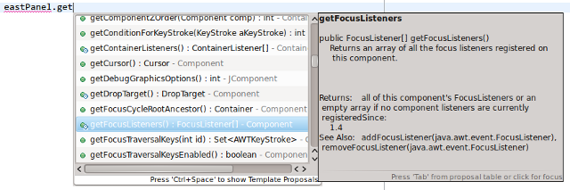

GUI programlama, IDEler, ve Python hakkında
May 22, 2011 - Tagged as: python, java, tr.
Son birkaç gündür yoğun bir şekilde GUI programlama ve Java ile uğraştım. İlk başta 2 arkadaşımla beraber basit bir chat sunucu/istemcisi yazmaya başladık(kaynak koda github depomuzdan erişebilirsiniz). Daha önceki tecrübelerimden (lisede web tasarım, daha sonra Python + GTK/QT ile arayüz denemelerim) arayüz tasarımından ne kadar nefret ettiğimi bildiğimden, bu projede ben sunucu ve istemci altyapısını hazırlamakla uğraştım. Fakat sonra bir ödev gereği, arayüz tasarımıyla da kendim uğraşmam gerekti.
Ödev Java ile yapılacaktı ve dolayıyısla arayüz olarak Swing kullandım. Başlangıç için Eclipse için WindowBuilder eklentisi ile ana çerçeve + layoutları oluşturup daha sonra elle yazdım. Bu süreçte şunu farkettim, adam gibi bir IDE, işleri daha önce tahmin edemeyeceğim kadar kolaylaştırıyor. Asıl olarak Python ile yazan biri olarak, birkaç gün öncesine kadar her işimde VIM kullanıyordum ve çok da memnundum(arayüz tasarımı yapmıyorum). Şu birkaç gün(sadece ödev için 1460 satır kod) bazı şeyleri farketmemi sağladı.
Onlarca sınıf, her sınıf için onlarca method, ve bu sınıflar arasında karışık ilişkilerin olduğu bir işle uğraşıyorsanız, iyi bir IDE şart. Dökümantasyonda geçirdiğiniz çok kısaltıyor.
Static typing çok hoş bir olay. Okula başladıktan sonra bol miktarda C(programlama yarışması) ve Java(ödevler) uğraşmam gerekti. Henüz sadece birkaç dili birşeyler üretebilecek seviyede biliyorum ve bu konuda çok da bilgili değilim, ama Python ile en çok dökümantasyon ve IDE sıkıntısı çekiyorum. Ücretli IDEleri denemedim ama denediğim tüm ücretsiz Python IDEleri Autocomplete konusunda çaresiz kalıyorlar. Python’da aşağıdaki gibi birşey görebilmek için herşeyimi(?!) verirdim:

Hatta mesela şöyle birşey yapabilseydim:

Ama yok, örneğin PyDev daha aşağıdaki kodda çakılıyor:
cls = Class1()
cls.Daha burda bile, Class1’in methodlarını gösteremiyor. Direkt olarak Class1. şeklinde yazıp, autocomplete çalıştırırsak, methodları gösteriyor, bu iyi, fakat bu sefer de bound-unbound method farkını anlayamıyor ve bound methodları da gösteriyor. Ki bound methodlar bu şekilde çağırılamaz. Fail.
WingIDE diyenler için, personal sürümü, sanki “öyle gerekli özellikler çıkaralım ki, kimse almasın” diye düşünülerek hazırlanmış. O kısıtlı özellikleri çıkardığımızda, Vim ile de yapıyorum zaten geri kalanları. Burdan bakın. Professional sürümü de çok pahalı.
PyCharm diyenler için, Open Source lisansı ücretsiz, fakat Open Source Definition’a uyan bir projeniz olmalı. Benim yok.
Eclipse, Java’nın verdiği acıyı inanılmaz derecede hafifletiyor. Yoksa sınıflar arasındaki saçma derecede karmaşık ilişkiler başka türlü çözülemez. Python’da ise, benzer karışıklıkta tasarlanmış(muhtemelen başka bir dilde, örneğin QT için C++) bir kütüphane ile çalışıyorsanız, acınızı hafifletecek hiçbir şey yok.
Konudan biraz sapacağım ama, Python hakkında beni sinirlendiren bir başka konu da, threading ve socket olayları. Ne zaman socket veya threading kullansam, mutlaka bir problemle karşılaşıyorum ve bunu ne zaman IRC’de sorsam, mutlaka birileri Twisted kullanmamı söylüyor. Kötü alışkanlıklardan, yanlış programlamadan vs bahsedip duruyorlar. Sanki Freenode #python kanalında, içinde şöyle bir kod olan bir sürü bot varmış gibi:
if "socket" in msg or "thread" in msg:
self.reply(msg, "Use twisted!!1 bad habits good code debugging bla bla bla")Java’da yaklaşık bir hafta kadar önce kullanılabilr bir hale getirdiğimiz chat istemci/sunucusu, dilin kendi thread ve socketlerini kullanıyor. Thread ve socket kullanımı ile alakalı dökümantasyon hariç hiçbir yere baktığımı hatırlamıyorum. Python’dan gelen birisi olarak şaşırtıcı derecede kolay ve stabil oldu.
Bir süredir kafamda kendi IRC istemcimi yazma fikri var. Şu anda yazabilmek için gerekli herşeyi biliyorum. Dün oturdum, Java ve Python’da IRC sunucusuna bağlanabilmek için gerekli en küçük kodu yazmaya karar verdim(arayüz ile beraber). Java’da, kendi socket ve thread sınıfları ve Swing ile kolayca yazdım(bu arada Swing’in ne kadar kötü gözüktüğüne dikkat, platform bağımsız olarak iğrenç gözüken bir arayüz kütüphanesi kendisi, ehehe):
Python’da QT kullandım. Fakat garip bir şekilde, ne zaman sunucudan bir mesaj gelse, QT segmentation fault veriyor:
QObject::connect: Cannot queue arguments of type 'QTextCursor'
(Make sure 'QTextCursor' is registered using qRegisterMetaType().)
Segmentation faultIRC’de sorduğumda aldığım yanıtı tahmin edersiniz zaten.
Şimdi oturup düşünüyorum, bir yanda Java, sadece dilin kütüphaneleri ile sunucuya bağlanıp, mesaj gönderip aldığım kod, arayüz ile beraber hazır bile. Elimin altında Eclipse gibi bir IDE var. Python ile yapmak istersem, ekstra olarak uğraşmam gerekecek şeyler: PyQT’nin dökümantasyonu, Twisted’ın dökümantasyonu, Twisted’ı öğrenmek, QT Designer ile tasarımı koda çevirmek için ekstra bir işlem yapmak, daha sonra bir daha QT Designer ile değişiklik yapamamak(Eclipse + WindowBuilder ile tasarım/kod arasında değiştirmek tek tuş).
Adil olmak lazım, Java ile başta bahsettiğim projeye girişmeden önce, bunların farkında değildim. Python ile ise bu boyutta bir proje yapmadım. Küçük küçük bir sürü script(ki her biri, yazdığım satır sayısına göre işimi abartı derecede kolaylaştırıyor), en büyük projem kendi blogum.
Python bana programlamaya ilk başladığım günlerde bile birşeyler üretme imkanı verdi. Programlamaya başladığım sene(lisede yaptığım web tasarım + programlamayı saymıyorum), ilk önce kendi blogumu, daha sonra arşiv düzenleyiciyi yapabildim. Başka bir dille yapamazdım.
Şu anda static typed bir dilin bana sağladıklarını biliyorum(en azından bu projeleri yapmaya başlamadan öncekine göre çok daha iyi biliyorum). Şimdi dynamic typed bir dilin avantajlarını görmem lazım.
O yüzden IRC istemcimi her şeye rağmen Python ile yazacağım. Java ile yazarsam, kendimi tekrar etmekten başka birşey yapmamış olacağım. Twisted’ı ihtiyacım olduğu kadarıyla öğrenmeye bugün başlıyorum. Çalıştırılabilir bir hale gelir gelmez yorumlarımı buraya yazacağım.
(Bu arada Twisted’da IRC istemci protokolü hazır olarak var)
##VIM hakkında
Vim hakkında da birkaç birşey söyleyeyim hazır IDE/Editor muhabbetine girmişken. Yaklaşık 7-8 aydır(sanırım) Vim kullanıyorum, ve şu dakikadan sonra Vim’siz hiçbir şey yazamaz oldum. Maillerimi Vim ile yazıyorum(sylpheed), bloga yazıları Vim ile giriyorum(kendi eklentim), Eclipse’de Vim eklentisi kullanıyorum(o olmasa Eclipse kullanamazdım), Lisp ile uğraştığımda, Emacs kullanmam gerekiyor ve Emacs’i vimpulse ile kullanıyorum. Şöyle iyi böyle güzel diye anlatmayacağım, resmen bağımlı oldum. Arkadaşların, normal IDE/Editorlerde nasıl yazdıklarını görünce duygulu anlar yaşıyorum.
Bu yüzden IDE seçerken dikkat ettiğim konulardan biri de Vim desteği(veya eklentileri) oluyor. Eclipse o açıdan(viPlugin sağolsun) çok başarılı. Söz konusu Java olduğunda düşünüyorum da, Eclipse olmasa herhalde hiçbir şey yazamazdım.(bu arada WingIDE Vim tuşlarını destekliyormuş, ne kadar başarılıdır bilmiyorum)